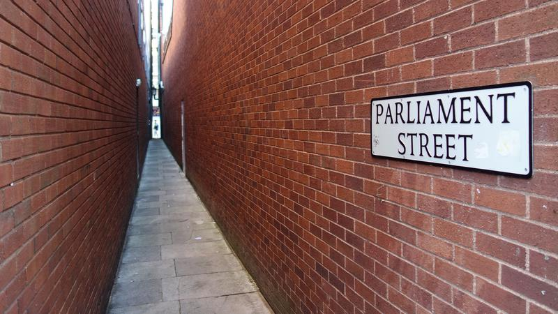
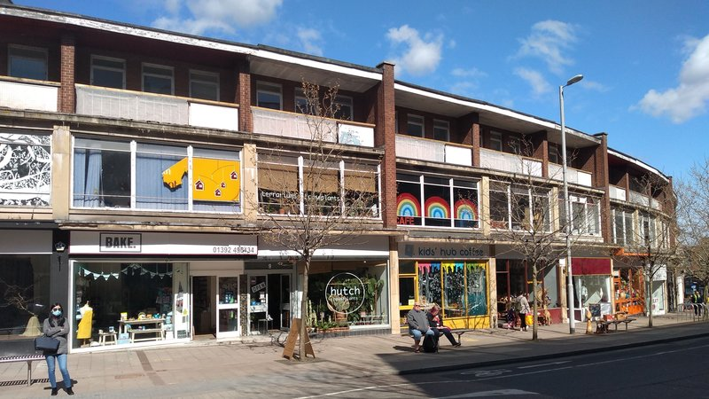
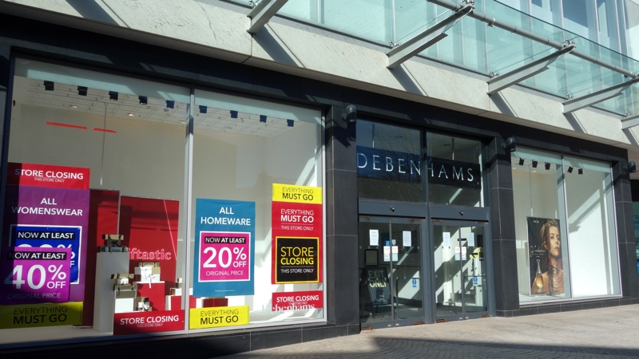
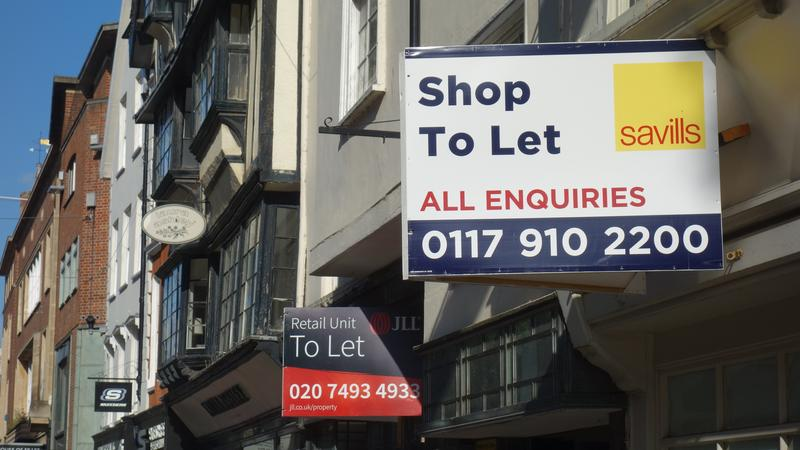
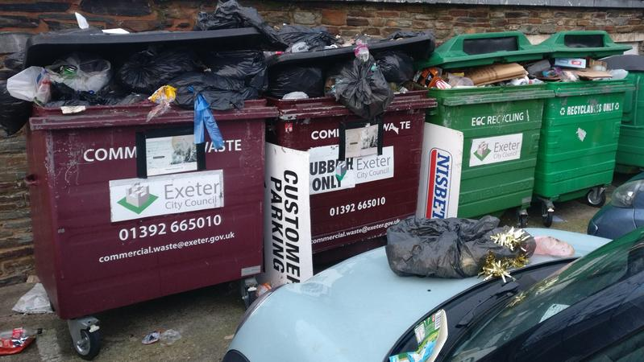

Last week we embarked on a 2022 local elections series aimed at providing a much-needed counterbalance to the mix of cheerleading and churnalism that is often delivered by Exeter’s media when it comes to local politics.
We looked at previous and current election campaign claims made by Exeter Labour, which will have been in control of the city council for ten straight years by election day on 5 May.
This will make it what the Electoral Reform Society calls a “one party council” with “weak electoral accountability” which greatly increases the likelihood of cronyism, corruption and spending decisions which offer poor value for public money.
We focussed on the city’s housing crisis, debunking claims around housing delivery, publicly-funded developments on council land and the provision of affordable housing across the city, outlining the impact of university expansion on the city’s residential housing stock.
“In May 2021, the people of Exeter put their faith in Labour. We made promises to you and we are delivering on those promises.”
2022 Exeter Labour local elections campaign leaflet
Our scrutiny of the party in power continues with an examination of campaign claims about the city centre and Exeter’s wider economy, including its misrepresentation of content marketing materials as authoritative sources of information about the city.
We asked Exeter Labour to respond to questions about these issues at the beginning of April, but it took more than a week to reply and still hasn’t provided any answers. We expected it to have the sources of its statements to hand, but it seems it does not.
We haven’t scrutinised Exeter’s other parties in the same way because they haven’t been making the decisions for the past ten years and their policy proposals and attempts at intervention are routinely rejected or ignored. It’s the “Labour-led council” we seek to hold to account here, in the public interest and in the public sphere.
We’ve included the party’s 2022-23 manifesto enable you to peruse its position in full as we cannot address all of the many claims it makes.
As last year, we’ll also publish an insider’s guide to who’s standing where in the city and what we might expect the results to look like, then offer a rolling results service complete with graphical analysis of vote shares and swings as the winners and losers are announced.
Subscribe to our free newsletter or follow us @exeterobserver to stay in the loop.
Exeter Labour’s 2022-23 local elections manifesto includes no fewer than five photos of St Sidwell’s Point, the council’s recently-completed city centre leisure centre, and manages to mention it five times too.
Statements include: “St Sidwell’s Point, built to Passivhaus standards, is one of the best facilities of its kind anywhere in Europe”, that it is “defining standards in the leisure and building industry” and that it “will play a vital role” in Exeter’s economy by “supporting the city centre and acting as a catalyst for the redevelopment of the wider area”.
However there is no explanation of which standards the building is supposed to be defining nor any way to test the claim that it will play a vital role in Exeter’s economy in future.
Both these claims are unverifiable: the normative fact-checking designation for subjective or speculative value judgements. See also the accompanying manifesto claim that the adjacent “new bus station has made a positive visual impact on the area attracting new business and visitors to the city”.
Nevertheless, as there appear to be only two other Passivhaus pools in Europe, St Sidwell’s Point must surely be one of the best in a field of three, even if that isn’t saying much.
And it does seem possible that the half a million annual city centre visits that its developer claims it will drive might be encouraged by the free car parking that is proposed for its users, but this claim cannot be assessed either as there is not yet any solid evidence to support it.
 St Sidwell’s Point under construction: 150 lorry loads of concrete were used in the first phase of building alone. The building’s lifetime carbon emissions have not been calculated.
St Sidwell’s Point under construction: 150 lorry loads of concrete were used in the first phase of building alone. The building’s lifetime carbon emissions have not been calculated.
It is, however, possible to judge a 2022 party campaign leaflet claim made by Labour MP Ben Bradshaw in a section about St Sidwell’s Point and the refurbished Riverside leisure centre.
He says: “Thanks to sound financial management and our council’s success in attracting investment to Exeter, while many parts of the country are losing leisure centres and other public assets, in Exeter they are expanding.”
Neither the Riverside refurbishment nor the construction of St Sidwell’s Point (or the new bus station) are funded by inward investment: they are being paid for solely by the city council.
The party’s campaign materials not only fail to mention that it has taken nearly ten years to build St Sidwell’s Point, or that it has cost £44 million to build — more than double its original £19.2 million budget — but also that the wider site redevelopment it was to catalyse (and was twice used to justify big budget increases) remains stalled.
Both the £75 million Princesshay extension that was initially intended and the £300 million “Citypoint development concept” that the council came up with when the first set of plans failed remain on the drawing board.
 A key 2021 Exeter Labour local elections manifesto pledge for the coming year was to “transform Parliament Street into a tourist hotspot”.
What Exeter Labour’s 2022 election campaign materials lack on the catalysing value of St Sidwell’s Point they seek to make up in claims about the rest of the city centre.
While footfall has returned to pre-pandemic levels Exeter was not, as claimed, in the top ten for high street spending on the Centre for Cities tracker when it was last updated in March. At the same time city centre car parking ticket sales remained 16% lower than pre-pandemic levels.
High street vacancy rates are relatively low at 13%, but these levels are replicated in major cities like London, which is in the bottom ten on the tracker for footfall and spending recovery.
This does not, of course, mean that the capital’s economy is fundamentally weak while Exeter’s is fundamentally strong. Centre for Cities agrees, judging Exeter’s city centre economy to be no more than “moderately strong” as its post-pandemic recovery is outstripped by places including Plymouth on every metric.
 Independent local businesses on Paris Street
City centre economic health can be assessed in many ways, some of which are instructive despite being too granular to include in comparative national analysis.
Independent local businesses and cultural initiatives are thriving on Paris Street and Sidwell Street, despite the council’s attempts to redevelop the “Citypoint” site and not because of them.
At the same time the much-touted introduction of Eastgate Market, identified as a key achievement in Exeter Labour’s 2022-23 manifesto, has already been “paused” because of low footfall levels.
But what about the rest of Exeter’s major employment sites, including Matford, Marsh Barton, Sowton, Pynes Hill and Exeter Business Park, none of which are mentioned in the party’s manifesto yet which together provide most of the city’s jobs?
Exeter Labour’s 2022 campaign leaflets suggest it sees returning city centre footfall as evidence of wider economic recovery when it is not. Most of the claims it makes about more orthodox city-wide economic indicators require closer scrutiny too.
“Exeter has seen a strong economic recovery, with footfall in the city centre returning to pre-pandemic levels, supporting our high street.”
2022 Exeter Labour local elections campaign leaflet
One such indicator is wages. In his 2022-23 budget speech council leader Phil Bialyk said: “In the last twelve months average salaries for Exeter residents increased by 6.4% to £30,825. The average workplace salary increased by 6.6% to £31,033 — well above the south west average.”
These averages are medians which, while preferable to arithmetic means when quoting wages because they are not skewed by outlying values, nevertheless convey no information about the range of values or the distribution of values across that range.
Such distributions are important when considering wages, especially in Exeter, the seventh most unaffordable city in the country. This is because housing is considered to be “affordable” when it costs 80% of local market prices, without taking wages into account, so the more unaffordable a place becomes the more the gap between earnings and living costs widens in real terms.
As median wage figures do not convey what proportion of a population can afford housing costs they are, at best, unhelpful when considering earnings in an economic context dominated by housing affordability.
However there are more serious issues with the use of these figures to represent Exeter earnings.
The council leader failed to mention that they include full-time workers only, excluding the quarter of the workforce who work part-time, many of whom are women who also typically receive lower wages than men however many hours they work.
(In Exeter the median gender wage gap means full-time male workers currently earn 17.6% more than their female counterparts.)
Nor did he mention that the figures he presented as annual salaries were derived by multiplying weekly wage figures by 52, not sourced direct from the annual salary information which is also supplied by the HMRC Annual Survey of Hours and Earnings, the source of all these figures.
Weekly wage data are not interchangeable with annual salary data because of the different basis on which people are employed in each case. And they don’t include the self-employed either.
Nor did he make clear that more than a third of the jobs located in Exeter are performed by people who don’t live here, making the use of Exeter workplace earnings unrepresentative for Exeter electors.
The picture is very different if we instead look at earnings for all employees who do live in Exeter. Instead of a 6.4% increase to a median annual salary of £30,825, as claimed, median Exeter salaries increased by just £5 per annum between 2019 and 2021 — to £23,404.
This means that Exeter median earnings have actually fallen in real terms over the past two years because of inflation. In addition they are lower than the median annual salary for all south west employees, which was £24,157 in 2021, as well as lower than the median annual salary of £26,192 across the whole country.
In fact-checking parlance the council leader’s claims are therefore mostly false: they may contain a kernel of truth but leave out facts which would produce a different conclusion.
Perhaps this is why, despite being repeated in an unpublished council economy briefing note in March, they do not appear in Exeter Labour’s 2022-23 manifesto, which does not mention earnings at all.
 Exeter Princesshay Debenhams closing down sale
Another more orthodox city-wide economic indicator is the number of businesses registered for VAT and/or PAYE. Exeter Labour’s 2022-23 manifesto echoes the council leader’s budget speech word for word: “Between 2019 and 2021, despite all the problems caused by the pandemic, the number of businesses in Exeter increased by more than 4%”.
This statement disguises an important underlying trend: the growth takes the form of micro-enterprises which employ fewer than five people.
The number of small businesses employing 10-49 people actually fell, the number of medium-sized businesses employing 50-249 remained static and Exeter lost five of its 35 large businesses, which employ more than 250 people, between 2019 and 2021.
This is acknowledged in the council’s unpublished economy briefing note, which recognises the loss of “predominantly national chains which no longer consider a high street presence as viable” in the context of a Centre for Cities report which found that Exeter had among the highest reductions in bricks and mortar fashion retail sales in the country: a fall of 17%.
The briefing note also identifies another important underlying trend as an “area of concern” which was neither mentioned in the council leader’s budget speech nor Exeter Labour’s manifesto.
This is that while the city’s working age population has remained steady, the number of economically active people has shrunk, falling by 7,000 — just over 10% — in the twelve months to January 2021. This includes the loss of 20% of the city’s self-employed workers, and is reflected in there now being more job vacancies in Exeter than there are universal credit claimants.
Instead of identifying a shortage of economically active people as a cause of “all sectors” in Exeter experiencing “difficulties in recruiting”, or an overheated housing market leading to people “declining job offers as they are unable to find rental properties within or near the city”, the note infers “confidence amongst our business community” from an increase in unfilled vacancies.
Exeter Labour’s 2022-23 manifesto echoes this sentiment with: “Businesses in the city are expressing high levels of confidence in the future”, to which the council leader added, in his budget speech: “And for good reason. The economy in Exeter has bounced back strongly.”
The unpublished briefing note is more pragmatic: “Since businesses have re-opened they are seeing rising base costs including energy, taxes, raw materials, fuel, wage inflation, interest rate rises, COVID loan repayments due March/April, VAT deferrals and salary increases.
“Some businesses are seeing a seven-fold increase for some business costs. Some of these business cost rises have been as a result of the pandemic, but can also be attributed to Brexit. When speaking with businesses across the city, growth ambitions still remain if they can weather the current storm.”
 Shops to let on Exeter High Street
Exeter Labour’s economic spin is not limited to selective representation of orthodox information sources: the party has a penchant for repeating claims derived from content marketing materials too.
These are materials which are designed to be of perceived value in their target markets, produced and distributed by businesses seeking to avoid the weaknesses of traditional direct marketing by instead indirectly marketing themselves as their authors.
Their widespread reproduction has directly contributed to the confusion of relatively independent and authoritative sources of information with those which are essentially commercial in nature or intent, corrupting the public sphere.
Such materials are the origin of the claim, prominently presented in Exeter Labour’s 2022 election campaign leaflets, that “Exeter will move into the top ten cities in 2022, for economic growth including increased employment”.
Council leader Phil Bialyk, Labour councillor Rachel Sutton and the council press office all repeated this claim in official council communications in December last year, and it appeared in Exeter Science Park PR and other local media too.
Its source is a “UK Powerhouse” report published by law firm Irwin Mitchell, which regularly commissions another private firm called the Centre for Economics and Business Research to produce similar content marketing materials.
Apart from the fact that no evidence is available to assess future forecasts, the report’s authors employ their own, unpublished, methodology in preference to relying on official economic data sources.
They do, however, also present retrospective GVA and employment figures in tabular rankings in their reports, allowing comparison between them.
We examined Exeter’s rankings in a total of eleven Irwin Mitchell reports covering a period of four years to the end of 2021. We found numerous discrepancies.
These include the presentation of both Exeter GVA and employment level reductions, as well as unchanged levels, as increases, and percentage changes that do not relate to the GVA or employment figures they accompany. This applies to both retrospective and forecast figures.
The reports rank Exeter in the top ten for GVA and/or employment growth no fewer than 26 times. One report forecast year on year employment growth of 6.5% to 114,800 jobs in 2021 Q2 and also forecast employment growth of 9.9% to 112,300 jobs in 2021 Q4, six months later, despite the later figure being 2,500 lower than the earlier figure.
Most remarkably, the reports claim that Exeter’s GVA grew nearly 30% in the two years to autumn 2019, but that it shed nearly 27,000 jobs at the same time, a workforce reduction of more than 20%.
Apart from their mutual incompatibility, these claims differ radically from the figures derived by the Office for National Statistics, which publishes both its methodologies and regular methodology reviews.
The ONS says Exeter’s GVA grew by about 6% over the same two year period, during which time it added around 2,600 jobs — a workforce increase of just under 3% — while the population grew by around 2%.
So while we should be extremely sceptical of Irwin Mitchell report claims about an Exeter economic miracle, the firm is no doubt delighted that Exeter Labour has taken them up so enthusiastically that it has spent public money marketing the firm’s brand in official council communications and has even highlighted it in its 2022 election campaign leaflets.
 Overflowing rubbish bins in Exeter city centre
Unfortunately, Exeter Labour’s susceptibility isn’t limited to Irwin Mitchell’s relatively sophisticated content marketing “campaign”, as the firm blithely describes it.
Its 2022 elections manifesto says one of its key achievements last year was Exeter being “announced as the second cleanest city in the country in a national survey”. Party campaign leaflets present this as Exeter being “recognised as one of the proudest, cleanest and greenest cities in the UK” in what they describe as a “national study”.
Council leader Phil Bialyk enthusiastically endorsed this claim in an official council communication, saying that “it was fantastic for Exeter to be recognised in a national survey as being the second cleanest city in the country, and the second highest ranked location for having pride in its neighbourhoods”.
The council press office also promoted the claim despite its source being a piece of content marketing for a builder’s merchant in Leicester.
The builder’s merchant didn’t present its findings as serious research with a robust methodology to match. Instead it “looked at a number of factors” to assign scores for several cities including a user-generated content website which says that it needs more contributors for Exeter to increase its data quality and an advertising keyword tool which was used to find the number of searches for the phrase “recycling near me” in each city.
Ranking factors also included the number of local gardening groups and levels of council expenditure on environmental and regulatory services.
The builder’s merchant didn’t consider whether high levels of such spending might equate to effective service delivery or simply poor value for taxpayers’ money. But widespread disbelief expressed by Exeter city centre traders when the rankings were announced, posted alongside photos of uncollected bins on social media to evidence their experience of council refuse collection, suggests it probably should have done so.
It did manage to talk up ten cities, one way or another, and succeeded in getting plenty of coverage around the country from local media channels that rely on such material. But it looks like Exeter was the only local authority to fall for its marketing scheme.
Relying on content marketing materials rather than authoritative sources of information doesn’t just make the “Labour-led council” look gullible, damaging its credibility, or waste public money providing free publicity to private firms.
It emboldens those who wish to mislead it by taking advantage of a dangerous disposition to dispense with critical scrutiny in favour of exceptionalist fantasies instead of confronting the challenges Exeter must face with candour and humility.